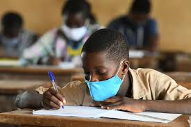
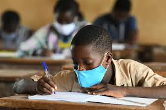

When the pandemic hit the country, the ministry ordered students in all education sectors from higher level learning to kindergarten to shut down or rather stop learning activities. After then, 5 months down the line, the students have been staying home following the closure, however, in mid september, the number of new infections was drasctically decresing this was a good landmark towards fighting covid, following that, the ministry of education led by prof George Magoha planned phased reopening and grade 4, standard 8 and form 4 students were allowed to report back.
However, when the the students mentioned above reported physically, the number of new infections has started rising again, this has raised alarm among many parents, as the pandemic has hit other schools, and has even lead to death in the affected instituitons.
It is a high time we face this problem of covid and schooling instead of freakong away from it, the ministry has put in all the effort to make sure that the students get back to school,
we need to understand the more the kids stay home is the more they are exposed to negativities, girls in other rural areas being married off forcefully, others are being circumcised, we have also heard cases of rape and continued rising cases of early pregnancy...for example, you might be able to protect your kid from FGM but to some extent fail to protect her from early pregnancy since you are not with her all the time, this is almost impossible if the kids are at school, on the other hand, for the boys, the more they stay at home is the more their morale for going back to school is reduced, know you that the boys, some of them have already started doing petty jobs, and are testing money, believe me, by the time we tell them to report back in January, upto 9% percent of them will refuse to go back....Is this what we want for our kids?